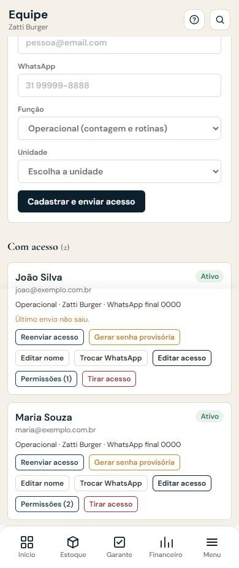

Checklist marcado não é checklist feito: como medir a abertura e o fechamento do restaurante
Horário, execução e qualidade, com foto do item crítico, um responsável com nome e um plano quando algo sai do padrão. O método vale para papel, planilha ou app.
Publicado em 16/11/2026
A folha de checklist está na parede, toda marcada. Mesmo assim, a chapa amanhece suja, o freezer passou a noite aberto e a etiqueta de validade não foi trocada. O papel diz que foi feito. A cozinha diz outra coisa.
O consultor Vinícius Zanetti trata do assunto no livro Restaurante no Controle, na etapa Garante do Método M.E.G.A., a da execução. A ideia central é que estrutura sem verificação não muda nada. Esta reportagem mostra como transformar o checklist de abertura e fechamento em algo que se mede, com qualquer ferramenta.

"Um checklist que a equipe ignora não garante padrão."Vinícius Zanetti, no capítulo Garante do livro Restaurante no Controle
O que entra num checklist de abertura e fechamento já foi tema do blog em Rotina de gestão do restaurante: dia, semana e mês, e a diferença entre POP e checklist está em Funcionário faz diferente? Falta POP e checklist. Aqui a pergunta é outra: como saber se o checklist foi cumprido de verdade.
Por que o checklist do restaurante para de ser feito?
Porque marcar é mais rápido que fazer, e ninguém confere. No começo, o dono olha a folha todo dia. Depois de algumas semanas, para de olhar, e a equipe percebe. O livro descreve o terreno em que isso acontece: operação intensa, pouco tempo para treinamento, rotatividade alta e uma equipe que volta aos velhos hábitos quando a pressão do serviço aumenta.
"Processos implementados precisam ser verificados com regularidade para garantir que continuam sendo seguidos com o padrão esperado."Vinícius Zanetti, no capítulo Garante do livro Restaurante no Controle
Não é preguiça da equipe. É falta de verificação.
Como saber se o checklist foi feito de verdade?
A folha marcada só responde se alguém disse que fez. Para saber se fez, três perguntas ajudam:
| Pergunta | O que mede | Como conferir |
|---|---|---|
| Foi feito no horário? | Pontualidade | Hora em que foi concluído contra o horário combinado |
| Todos os itens foram feitos? | Execução | Itens concluídos sobre o total da lista |
| Foi feito no padrão? | Qualidade | Foto do item crítico ou conferência de quem chega depois |
A foto é a prova mais barata que existe. Ela não precisa estar em todo item. Precisa estar nos que custam caro quando dão errado: a chapa limpa, o termômetro do freezer, a etiqueta de validade, o caixa fechado. Uma foto vale mais que um tique na folha.
O livro cita três tipos de checklist que reduzem erro de forma direta.
"Checklists de abertura e fechamento, de controle de temperaturas e de organização do estoque reduzem erros e aumentam a eficiência."Vinícius Zanetti, no capítulo Estrutura do livro Restaurante no Controle
Como dar nota ao checklist da equipe?
Com as três perguntas, o checklist vira um número. A fórmula exata importa menos do que usar sempre a mesma régua, para que a nota de hoje possa ser comparada com a da semana passada.
Neste exemplo, uma pizzaria dá a cada parte uma nota de 0 a 100 e tira a média. O fechamento de terça foi concluído depois da tolerância combinada, e a pontualidade ficou em 50. Foram feitos 9 dos 10 itens, e a execução ficou em 90. Uma das cinco fotos mostrou a bancada fora do padrão, e a qualidade ficou em 80. A nota do dia, neste exemplo, é 73.
Um número sozinho diz pouco. O valor está na tendência: a abertura que cai toda segunda, o fechamento que piora em determinado turno. É isso que vale levar para a conversa semanal com a equipe, no formato explicado em O erro mais caro da semana no restaurante.
Quem é o responsável pelo checklist de abertura e fechamento?
Uma pessoa. Não o turno. Não a equipe da cozinha.
"Cada processo implementado tem um responsável definido, com nome e função. Não um departamento. Não a equipe. Uma pessoa específica que responde pela execução e pela qualidade daquela tarefa."Vinícius Zanetti, no capítulo Garante do livro Restaurante no Controle
Para funcionar, cada checklist precisa de quatro informações: o dia, o horário, o responsável e a tolerância, quanto atraso é aceitável antes de virar falha. Com a tolerância combinada antes, o atraso deixa de ser discussão. Vale combinar também quem fica sabendo quando o horário estoura: o próprio responsável, para corrigir no mesmo dia, e quem faz a gestão.
O que fazer quando um item do checklist fica fora do padrão?
Cada item fora do padrão pede um plano de ação: o que vai ser feito, por quem e até quando. Sem isso, a mesma falha aparece na semana seguinte.
"Quando uma inconsistência é identificada, a resposta não é punição, é diagnóstico."Vinícius Zanetti, no capítulo Garante do livro Restaurante no Controle
O livro separa duas causas. Se a pessoa não entendeu o processo, a solução é treinamento, como mostra Treinamento de equipe de restaurante: como fazer. Se o processo ou a ferramenta não funciona na prática, quem muda é o processo. Um item que ninguém consegue cumprir no horário talvez esteja no checklist errado, ou no horário errado.
Checklist é obrigatório pela vigilância sanitária?
A RDC 216, de 2004, da Anvisa, que trata das boas práticas em serviços de alimentação, não usa o nome checklist de abertura e fechamento. Mas exige Procedimentos Operacionais Padronizados escritos para quatro temas: higienização de instalações, equipamentos e móveis; controle de vetores e pragas; higienização do reservatório de água; e higiene e saúde dos manipuladores. Cada POP deve trazer a frequência de execução e o cargo ou a função do responsável, e os registros devem ser guardados por pelo menos 30 dias.
Na prática, o checklist com responsável e data é um jeito simples de registrar parte do que a norma pede. Regras estaduais e municipais podem acrescentar exigências; a vigilância sanitária local confirma o que vale para cada restaurante.
O que o dono de hamburgueria e pizzaria faz com isso
- Escolha os itens críticos. Os que custam dinheiro ou segurança quando falham.
- Defina dia, horário, responsável e tolerância para cada checklist.
- Peça foto nos itens críticos. Não em todos.
- Dê nota com a mesma régua e olhe a tendência da semana.
- Abra um plano para cada falha, com dono e prazo, e trate a causa: treinamento ou ajuste do processo.
É assim que a abertura e o fechamento deixam de depender do dono presente. Os sinais dessa dependência estão em 5 sinais de que o restaurante depende do dono.
Como o Zatti Hub faz isso
O Zatti Hub, app de gestão da Zatti que roda no navegador e pode ser instalado na tela do celular, tem um módulo chamado Checklist Garante. O dono monta os checklists a partir da biblioteca de POPs da Zatti e publica cada um com dia, horário, responsável e tolerância. A equipe cumpre pelo celular, com foto.
A partir disso, o app:
- calcula uma nota de 0 a 100 com pontualidade, execução e qualidade;
- monta o quadro do dia;
- cria planos de ação automáticos para o item que fica fora da meta;
- avisa o responsável pelo WhatsApp quando o checklist atrasa.
Quem cumpre o checklist é cadastrado antes no módulo Equipe, que aparece na imagem desta reportagem. O dono cadastra a pessoa com o WhatsApp, escolhe se ela é da gestão ou do operacional e ajusta as permissões. O app envia o login e uma senha provisória pelo WhatsApp, e a pessoa cria a própria senha no primeiro acesso. No Dashboard da gestão, o Garante aparece junto com estoque e financeiro.
O que o app não faz
- Não cria checklist sozinho: quem escolhe os itens é o dono.
- A conferência das fotos por inteligência artificial está em teste e não faz parte do que o app entrega hoje.
- Não controla ponto, escala nem folha de pagamento, e ainda não tem cadastro de freelancers.
- Não funciona sem internet.
O app mede e avisa. Quem decide o que entra na lista e conversa com a equipe sobre a nota continua sendo o dono.
Perguntas frequentes
O que colocar no checklist de abertura do restaurante?
Os itens que custam dinheiro ou segurança quando falham: equipamentos ligados e na temperatura, insumos conferidos, área limpa, caixa aberto. A lista muda conforme a operação. O que não muda é cada checklist ter dia, horário e um responsável com nome.
Como fazer a equipe cumprir o checklist?
Verificando com regularidade. O livro Restaurante no Controle defende responsável com nome, conferência frequente e, quando algo falha, diagnóstico em vez de punição: treinamento se a pessoa não entendeu, ajuste se o processo não funciona na prática.
Como medir se o checklist foi bem feito?
Com três perguntas: foi feito no horário, todos os itens foram feitos e foi feito no padrão. Pontualidade, execução e qualidade podem virar uma nota, desde que a régua seja sempre a mesma para comparar uma semana com a outra.
Checklist de restaurante é obrigatório?
A RDC 216/2004 da Anvisa não fala em checklist de abertura e fechamento, mas exige POPs escritos para higienização, controle de pragas, reservatório de água e saúde dos manipuladores, com frequência e responsável, e registros guardados por pelo menos 30 dias.
Fontes
- Vinícius Zanetti, Restaurante no Controle, capítulos Estrutura e Garante.
- Anvisa, Resolução RDC nº 216, de 15 de setembro de 2004, itens 4.11.1 a 4.11.4 (Manual de Boas Práticas e POPs).